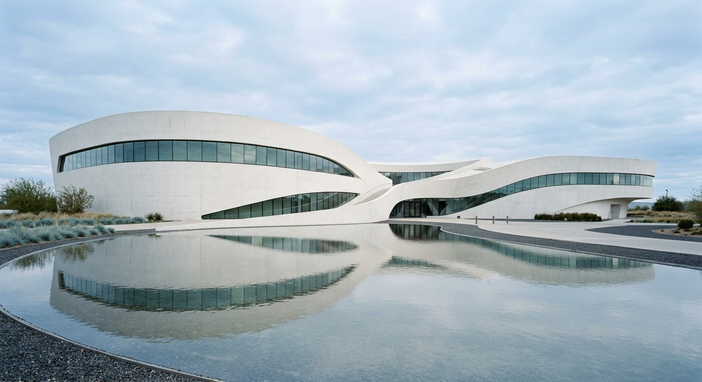
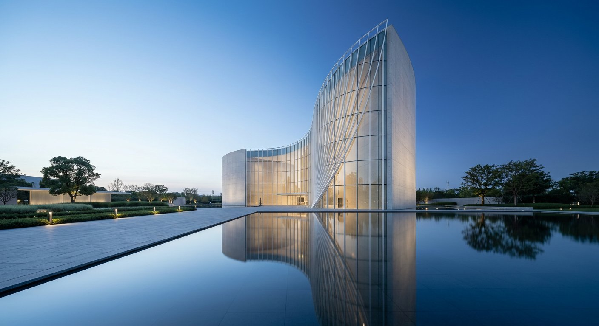
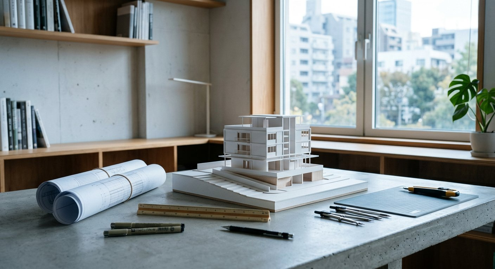
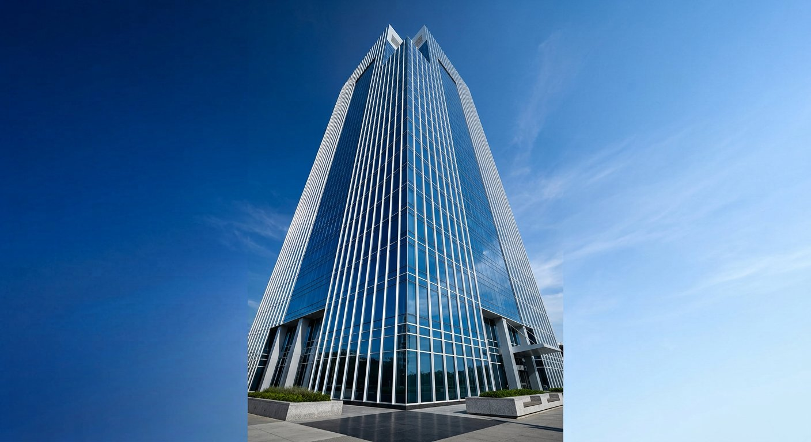
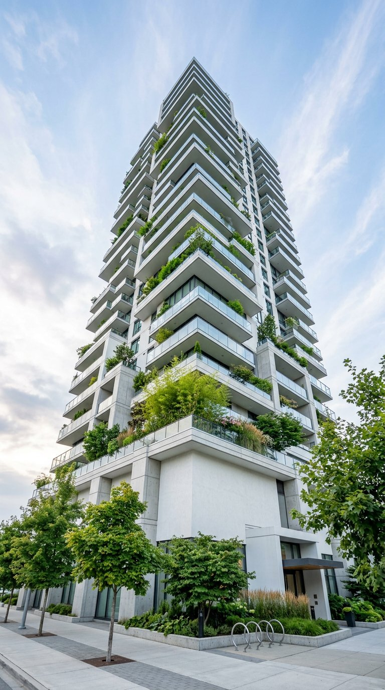
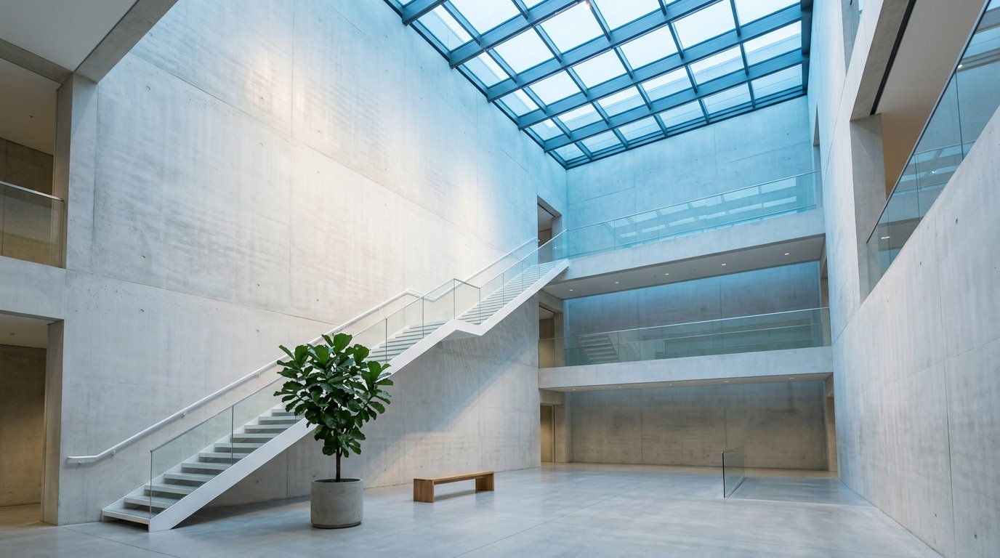
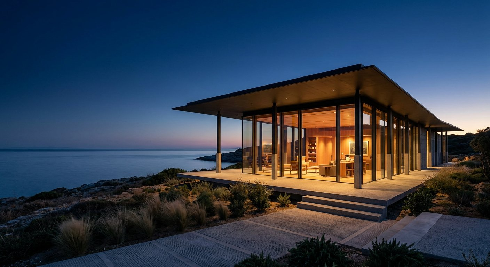
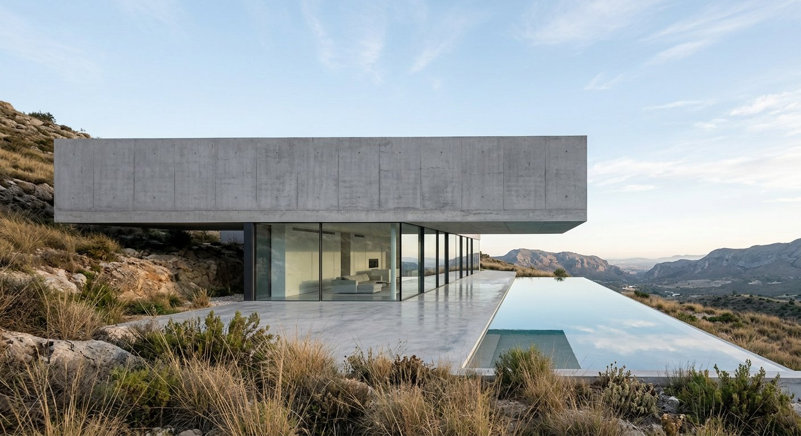

MadaniySado san’at markazi
Oqiy beton hajmlar va suv oynasi orasidagi oqim — musiqa va san’at uchun shahar mehmoni.
AZURA Architects — yorug‘lik, beton va ko‘k osmon muvozanatini izlaydigan arxitektura studiyasi. Biz makonni shovqinsiz, ammo esda qolarli qilib quramiz.

Har bir loyihani eskizdan mualliflik nazoratigacha o‘zimiz olib boramiz.

Studiyamiz 2012-yilda Toshkentda tashkil etilgan. Biz me’morchilikni shunchaki bino qurish emas, balki yashash ritmini tartibga solish, deb bilamiz. Jamoamizda 18 nafar me’mor, konstruktor va vizualizator ishlaydi.
Uslubimiz — minimalizm, aniq geometriya va tabiiy yorug‘lik. Asosiy palitramiz esa osmon ranglari: och ko‘k va to‘q ko‘k.
Har bir bino o‘z shahri, iqlimi va madaniyatiga javob beradi.
Fasaddan oldin yorug‘lik ssenariysini loyihalaymiz.
Passiv sovutish, soyadan foydalanish va mahalliy materiallar.
Madaniy, turar-joy va ofis binolari — 2019–2025.

MadaniyOqiy beton hajmlar va suv oynasi orasidagi oqim — musiqa va san’at uchun shahar mehmoni.

Ofis32 qavatli A-toifa ofis minorasi: ikki qavatli osmon bog‘lari va passiv soyada tutish tizimi.

Turar-joyPog‘onali terasalar va har bir xonadonga tegishli osmon bog‘i — shahar ichida bog‘.

IntererOsmon derazasi ostida suzuvchi zina — yorug‘lik devor bo‘ylab soat sayin oqadi.

MadaniyDengiz ufqiga osilgan yupqa tom — shomda ichki nur suv ustida suzadi.

Turar-joyTepalikka osilgan gorizontal hajm va infinity hovuz — ufq bilan bir tekis.
To‘liq sikl: tahlildan kalit topshirishgacha.
Genplan, eskiz va ishchi hujjatlar — bitta izchil mualliflik g‘oyasi atrofida.
Makon ruhiyatiga mos materiallar, yorug‘lik va mebel ssenariylari.
Fotorealistik tasvir va VR sayr — qurilishdan oldin makonni his eting.
Qurilish maydonida har hafta nazorat — g‘oya betonda yo‘qolmasligi uchun.
Fasad ritmi, tun shahri va studiya hayoti. Rasm ustiga bosing.
G‘oyangiz bormi? Bir piyola choy ustida muhokama qilamiz.